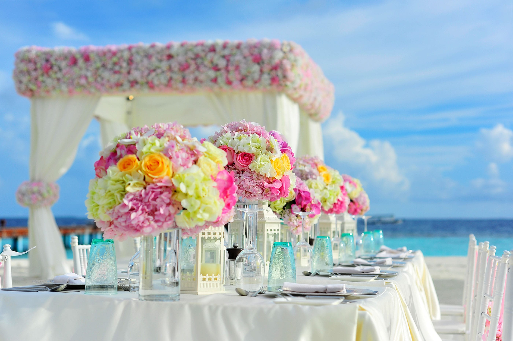
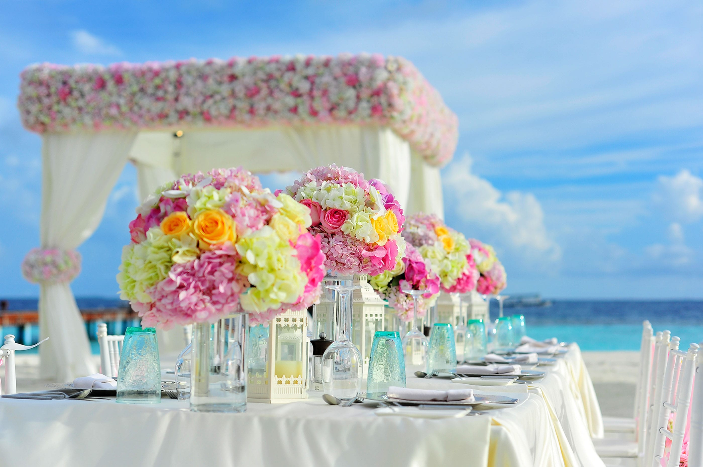

Profil Singkat
Lahir di Lhokseumawe, Aceh pada September 1994, Menempuh pendidikan SD di Cilegon dan Qatar International School dan melanjutkan Pendidikan SMP dan SMA di QIS pula. Lulus pada tahun 2012, melanjutkan Pendidikan perguruan tinggi di Institut Teknologi Bandung jurusan Perencanaan Wilayah dan Kota, Alhamdulillah lulus pada tahun 2016.
Aktivitas
Selama menjadi siswa, Hafizh aktif dalam bidang debat dan politik antaranya adalah Doha Debate dan MUN, disertai pula oleh kegiatan charity community. Pada jenjang mahasiswa, Hafizh aktif pada bidang sosial, antaranya menjadi guru di ITB mengajar (Skhole ITB) dan Kementrian Pengabdian Masyarakat. Hafizh aktif pula di bidang Dakwah yang diwadahi KARISMA ITB, Muslim SAPPK ITB dan UPTQ Al Muhandis di mana dia menjadi pengurus.
Menurut Calon Pasangan
Saya dan kang Hafizh beraktivitas di satu unit di Salman (Karisma ITB), meski begitu saya mengenalinya hanya sebatas tahu saja, Karena selama di Karisma kami belum pernah satu divisi dan berkegiatan di event yang sama. Awal mengenalnya di tahun kedua Unit Karisma saat kang hafizh sedang diamanahi sebagai ketua divisi. Kesan pertama mengenalnya biasa saja, namun cenderung segan karna ekspresinya yang serius. Usai lengser di unit Karisma saya masih beraktivitas di lingkup Salman, volunteer aktivis apabila dibutuhkan. Hingga awal mula mulai kenal akrab dengan kang hafizh saat mengikuti kepanitiaan salah satu event untuk awal bulan September. Saya dan calon menjadi panitia tersebut. Meski berbeda jobdesk namun cukup bisa kenal akrab karena rutinnya koordinasi antar panitia.
Tidak banyak yang saya tahu tentang calon pasangan meski sudah kenal akrab saat kepanitiaan. Saya hanya cukup mengenalinya sebagai sosok yang ramah, baik, fokus dalam mencapai target, selalu menghargai usaha, dan bersikap sederhana. Saat berproses dengannya pasca khitbah saya mulai mengenalinya sedikit demi sedikit. Disamping sikapnya yang begitu serius ternyata calon memiliki sisi humoris, mudah memahami orang lain, dan peka terhadap kondisi emosional orang. Memiliki sisi melankolis dan mudah tersentuh hatinya oleh hal2 kecil. Punya jiwa sosial tinggi dan senang terjun di dunia sosial juga. Sedikit pelupa dan sering ceroboh juga tertutup untuk masalah sendiri, namun selalu membantu dan memudahkan permasalahan oranglain. Juga sosok yang taat dan menyayangi keluarga.
 
